| 日付 | 2019年1月20日（日） |
|---|---|
| 山域 | 奥武蔵 |
| メンバー | 家族（妻、長女・7歳、長男・5歳） |
| 山行形態 | 子連れ日帰り |
| アクセス | 車 |
| ルート (Map) | 道の駅みなの (8:31) - (10:18) 蓑山 (12:03) - 道の駅みなの (13:34) |
先週に引き続き2週連続の登山。
あまりハードなコースは歩きたくないとのことで、
手軽に歩けるコースから選択する。
選んだのは蓑山。山頂に美の山公園があり、
山頂まで車で行ける山だが、下から歩いてもお手軽ハイキングだ。
道の駅みなのに車を停める。標高170m。
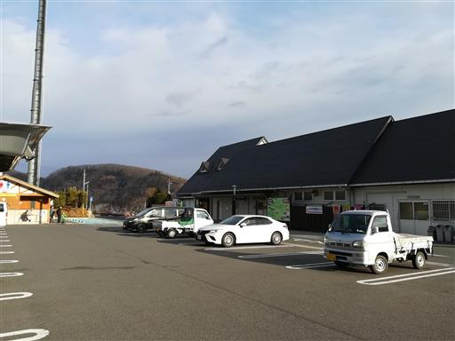
美の山公園の標識に従って、しばらく車道を歩く。
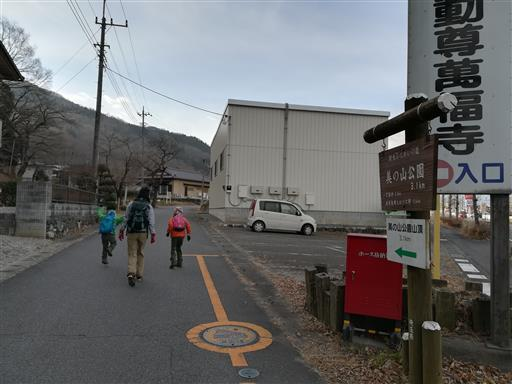
古い貨物列車のコンテナ。倉庫に使われているのだろうか？
今ではあまり見かけなくなった。
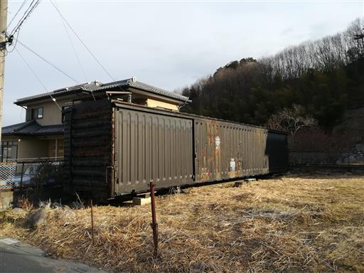
しばらく歩くと登山道に到着。

小さな祠。
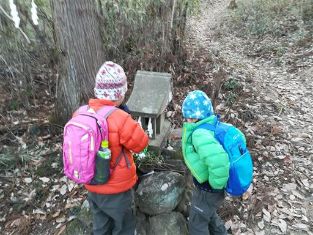
変化の乏しい単調な道が続く。
道はよく整備されていて非常に歩きやすい。
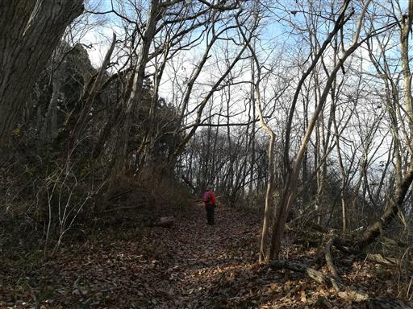
途中で車道を横切る。
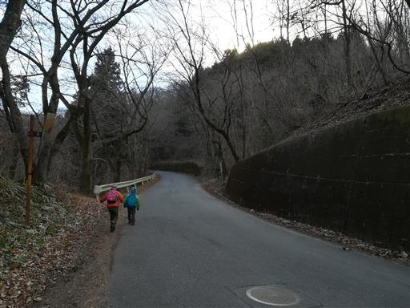
古いテーブルとベンチ。今にも壊れそうで使用禁止になっている。
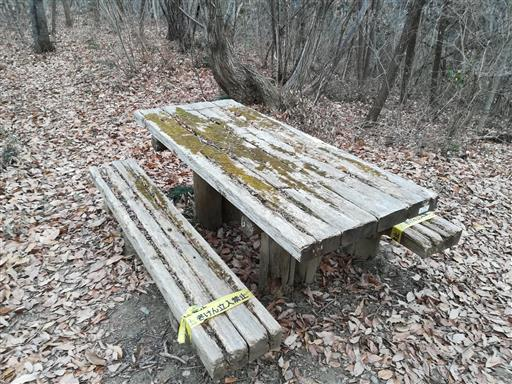
お面のような穴の開いた葉っぱを拾う。
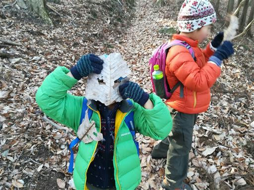
何かの繭？実？いくつか地面に落ちている。
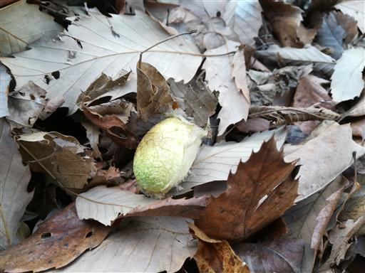
冬枯れの道を歩いていく。
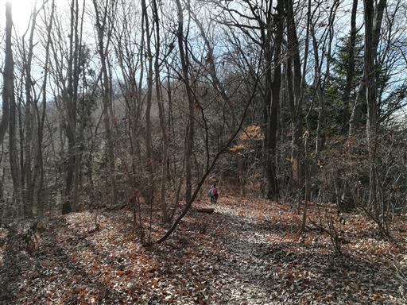
山頂に近づくと石の階段が現れる。

美の山公園の一角に到着。公園内はたくさんの道があるため地図でルートを確認。
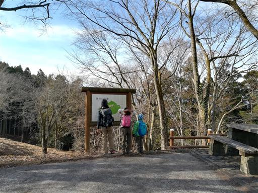
ここからは両神山がきれいに見える。
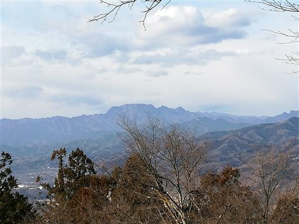
途中で長い階段を登る。
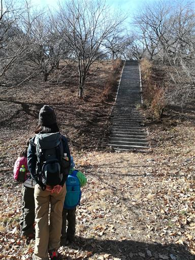
登ったところは広々とした草原。ボールでも持ってくればよかった。
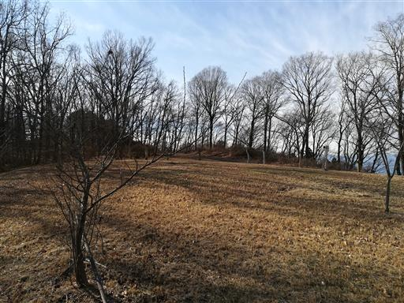
山頂近くの展望台に到着。早速登ってみる。
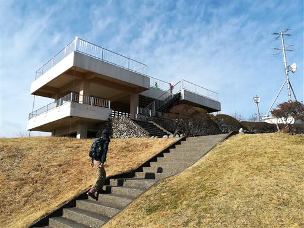
武甲山。埼玉の山に登ると両神山と武甲山はよく目立つ。
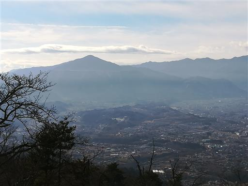
眼下に広がる秩父の町。荒川の周囲に河岸段丘ができている。
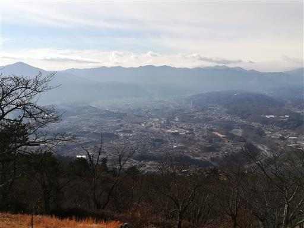
こちらは奥秩父方面。甲武信ヶ岳など高い山々が見えているが、少し雲が出ている。
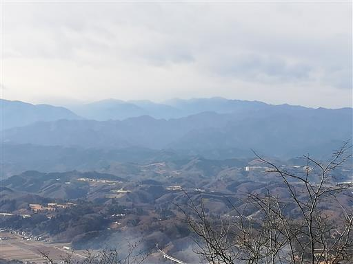
子供達には景色が目に入らないようで、
展望盤に登ってぐるぐる周って遊んでいる。
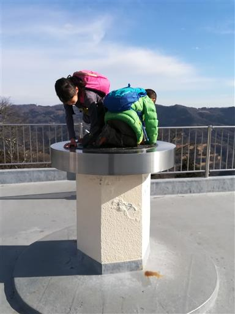
展望を満喫したら一応山頂を踏むために、山頂標識を目指す。

蓑山山頂到着。標高587m。
アンテナが占拠する無粋な山頂だ。
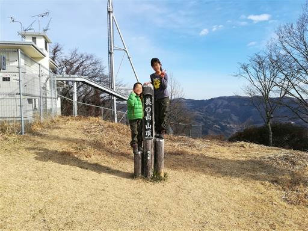
展望台の側のテーブルで昼食を取ることにする。本日はカップラーメンだ。
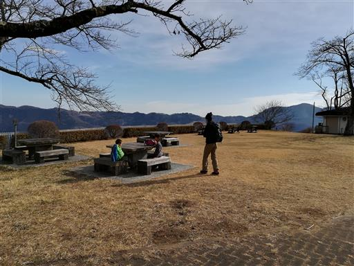
昼食後は公園内を散策する。こちらは駐車場。
山頂部は最初無人だったが、しばらくすると登山者や車で遊びに来た人が
パラパラとみられるようになる。
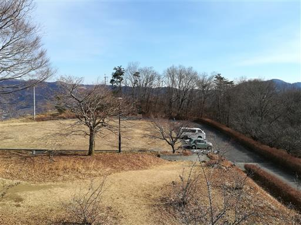
下山開始。
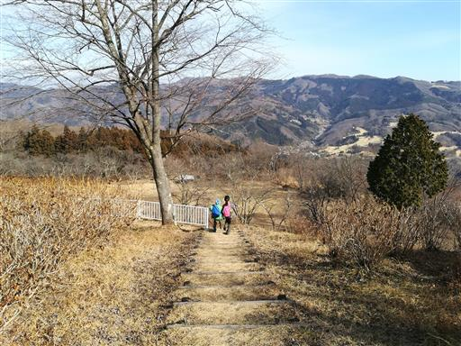
この辺りはアジサイがたくさん植えられている。
桜やツツジもたくさんあり、それぞれの花が咲く季節は見ごたえがありそうだ。
残念ながら今は全て冬枯れだ。
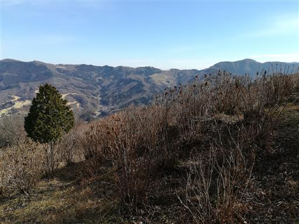
キノコのような形をした東屋。
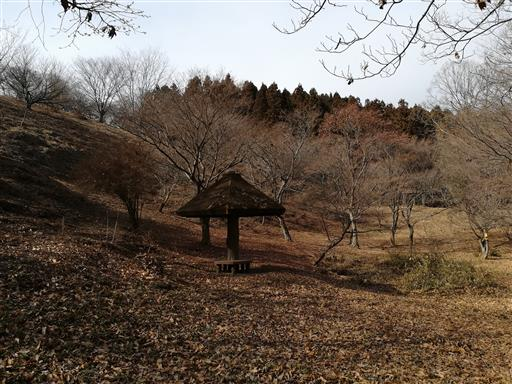
途中で分岐点を右に折れ、登りとは異なる道を下る。
こちらの道は登りの道ほど整備されていなくて、斜面が急だ。
落ち葉が大量に積もっていて非常によく滑る。
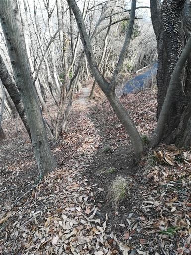
途中で車道に出てくる。目の前に現れたのはいこいの村。
宿泊施設や日帰り温泉施設がある。
途中で皆野駅に続くと書かれていた登山道を見送ったのだが、
その道を歩くべきだったようで、しばらく車道歩きを強いられる。
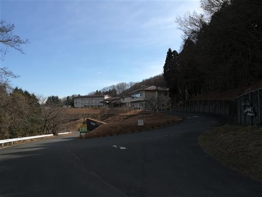
水がしみ出している部分が凍り付いている。
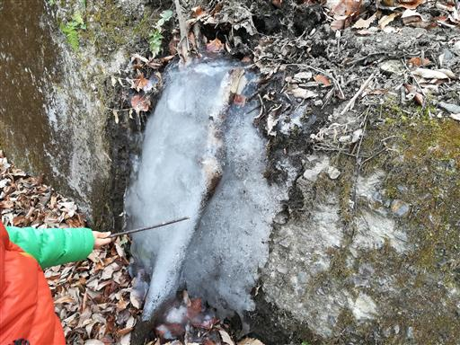
長い車道を歩いていると車道を横切る登山道を発見。
ようやくここから再び登山道に入っていく。
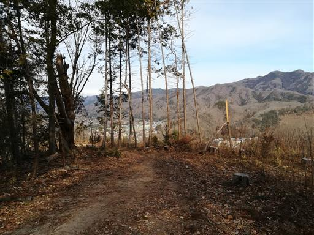
野良犬？一匹の黒い犬がウロウロしている。
こちらに近づいてきたが、無視して通り過ぎる。追ってくることは無かった。
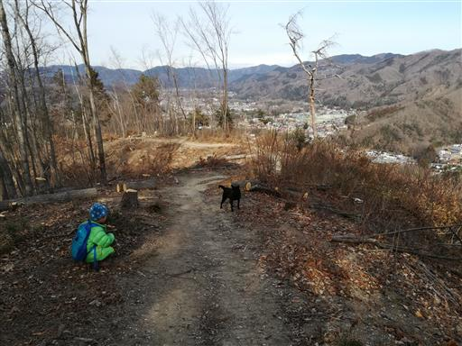
尾根道が続く。
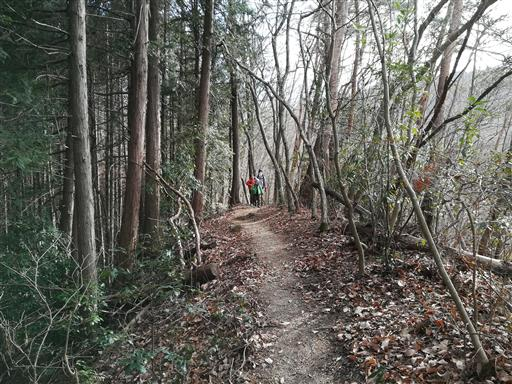
再び小さな祠。
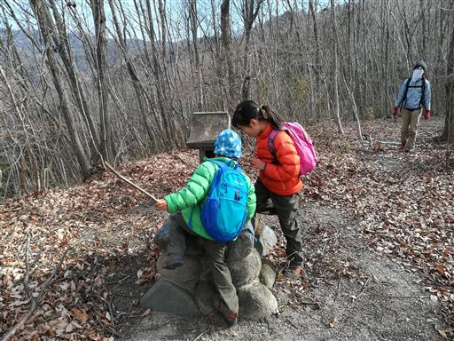
富士嶽大神。祠や神社の多い山だ。
昔から地元の人に愛されてきた山なのだろう。
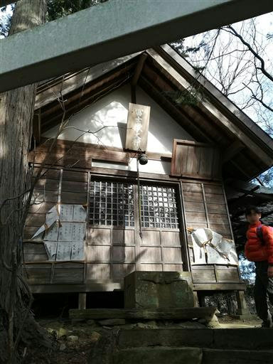
珍しい石でできた賽銭箱が置かれている。
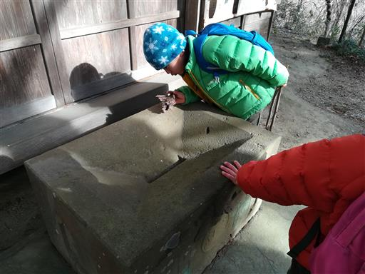
下山。あとは車道を歩いて道の駅みなのに戻る。
本日は子供達でも楽々な登山だった。
花の咲く季節に訪れた方がより楽しめそうだ。
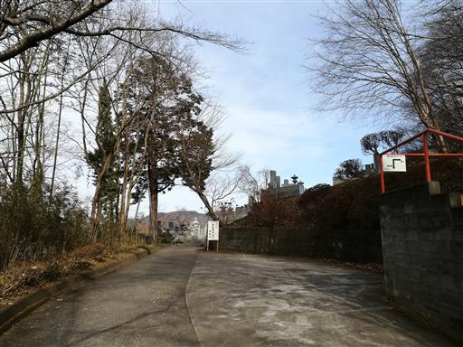